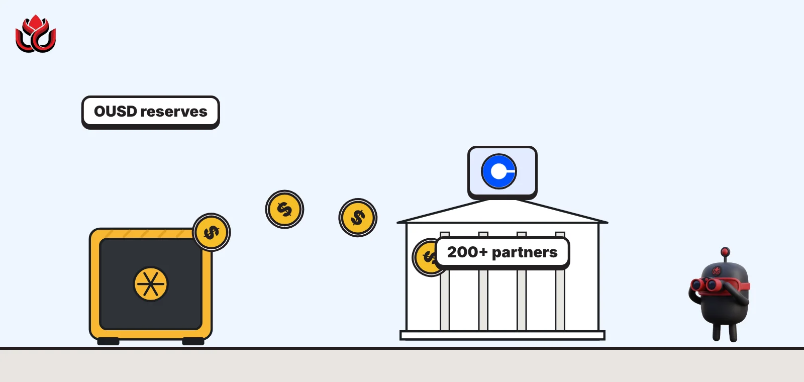

Visa, Mastercard, Stripe, Coinbase and Shopify launch OUSD, and hand partners the interest
Open Standard's dollar stablecoin went live on September 30 with more than $1 billion in launch liquidity and over 200 partner companies. Partners, not the issuer, keep most of the reserve income. Circle is not on the list.

Key points
- OUSD, a new dollar stablecoin backed by Visa, Mastercard, Stripe, Coinbase and Shopify, launched on September 30, 2026, with more than $1 billion in launch liquidity.
- Partners that drive its use get most of the interest on its reserves, minus a small fee, and more than 200 companies had signed up by launch.
- The issuer, Stripe's Bridge, can pause the contract and freeze tokens, and redemptions are limited to 10% of supply a day.
The launch
A new dollar stablecoin called Open USD, or OUSD, went live on September 30, 2026, with Coinbase, Mastercard, Shopify, Stripe and Visa behind it, Open Standard announced. The twist: the partners that spread it, not the issuer, get most of the interest earned on its reserves. Businesses and developers can mint and burn it at a 1:1 rate with the dollar, at no cost.
Open Standard is the company that runs OUSD. Each of its five founding partners is investing in the company and helping build OUSD supply, delivering more than $1 billion in near-term launch liquidity, the company said on September 24. It plans to add a small number of further founding partners. Zach Abrams, who founded the stablecoin firm Bridge, is chief executive.
The token itself is issued by Bridge, a Stripe company. Reserves are held at BlackRock, Lead Bank and other large financial institutions, and Bridge will publish reserve attestations every month.
A different deal on reserve income
Most stablecoin issuers keep the interest earned on their reserves. OUSD flips that. When it was announced in June, Open Standard said partners would receive all of the earnings from the reserves, less a small management fee to cover operating costs. Businesses can mint and redeem with no fees and no artificial volume limits.
Partners earn rewards in proportion to the supply and activity they drive on their platforms, and can earn equity in Open Standard on the same basis. Over time a board drawn from the founders will represent shareholders.
In a September post, Abrams said Open Standard would charge developers a small fee on transactions instead, much like bank payment networks, and judge its success by transaction volume. His stated aim is "to build the most useful stablecoin".
Companies signed up to OUSD
companies
Sources: Open Standard, Introducing Open USD and OUSD is live
Who is in, and who is not
The partner list, last updated on October 21, reads like a map of global payments. It includes American Express, Discover, BlackRock, Standard Chartered, U.S. Bank, Google, Ripple, Western Union, UBS, SBI Holdings, exchanges such as OKX, Bybit and Crypto.com, and DeFi protocols such as Aave and Morpho. BNY appeared in the June launch list.
The founding five cover most of the path a dollar takes in online commerce: card networks (Visa and Mastercard), a payment processor (Stripe), a store platform (Shopify) and a crypto exchange (Coinbase). Circle, the issuer of USDC, does not appear on the partner list.
Some partners have dollar tokens of their own. Ripple, for example, issues RLUSD, which now competes with OUSD in the same new Aave markets. How OUSD will sit alongside partners' own products has not been spelled out.
Where OUSD lives
OUSD is issued natively on Base, Ethereum, Solana and Tempo. The first trading venues named were Coinbase, Kraken and Uniswap. Businesses could start building through BVNK, Stripe and the Visa Stablecoin Platform on launch day, and through Coinbase from October 1, Open Standard said.
DeFi moved quickly. On launch day, Aave Labs proposed adding OUSD to the Aave V3 Core Instance and the Aave V4 Core Hub on Ethereum. At first OUSD would be a supply and borrow asset only, with collateral use disabled. That means lenders could earn interest on it and borrowers could take it out as a loan, but nobody could post OUSD as collateral. Aave Labs disclosed that it is an Open Standard partner but said it receives no reserve income tied to OUSD.
Sentora, a DeFi risk manager, had already filed its own proposal on September 28 for curated Aave V4 markets that lend only RLUSD, PYUSD and OUSD. Those markets went live on October 22, including an OUSD Yield market where users borrow OUSD against USDe, PRIME, mWIN and PST, Aave Labs said.
Who can freeze it, and other controls
Aave Labs' proposal sets out the token's controls in detail, based on its review of the issuer. Bridge Building Inc, a Stripe subsidiary, issues OUSD under contract with Open Standard, which is not itself the issuer. Lead Bank and BNY provide reserve banking for cash, BlackRock manages the Treasury reserves, and EY is to provide monthly attestations, the proposal says.
The issuer holds strong powers. It can upgrade the contract, pause it, freeze or seize tokens and keep allow and deny lists. Redemptions are limited to 10% of outstanding supply in any 24-hour period. Issuance is expected to move to Bridge National Trust Bank once that bank gets final approval from the US Office of the Comptroller of the Currency, which gave it preliminary conditional approval on February 12, 2026.
There is no OUSD-specific audit of the deployed contracts yet. An audit firm, Zenith, reviewed the issuer's stablecoin template in five reports between July 2025 and February 2026.
Timeline
Open USD announced with more than 140 businesses
Zach Abrams sets out the business model
Founding partners and more than $1 billion in launch liquidity confirmed
Sentora proposes Aave V4 markets lending RLUSD, PYUSD and OUSD
OUSD goes live; Aave Labs proposes listing it on Aave
Coinbase integration opens
Sentora's curated Aave V4 markets go live, including OUSD Yield
LC Insight analysis
This section is our reading of the facts above, not a statement of fact.
- Sharing reserve income is the real challenge to incumbents. If distributors can earn most of the interest on OUSD, they have less reason to promote a stablecoin whose issuer keeps it.
- The partner list reads like the payments industry itself. That gives OUSD distribution most new stablecoins never get, but control sits with a handful of big companies, and the issuer keeps wide freeze and pause powers.
- We expect margins to tighten across the sector. Issuers will have to pay distributors more to keep their place in wallets, exchanges and checkouts.
What's next
- Bridge's first monthly OUSD reserve attestation
- OUSD supply on Ethereum, Base, Solana and Tempo
- Aave governance vote on listing OUSD on V3 and the V4 Core Hub
- Whether more founding partners join Open Standard
Disclaimer. This article is based on public information and the sources listed below as of the update time shown. It is for information only and is not investment, legal or tax advice. Figures may change as companies and authorities publish new data.
Sources
- Open Standard, OUSD is live (September 30, 2026)
- Open Standard, Introducing Open USD (June 30, 2026)
- Open Standard, Company structure and leadership (September 24, 2026)
- Open Standard, Partners list (updated October 21, 2026)
- Aave Labs, ARFC: Onboard OUSD to Aave V3 Core Instance and Aave V4 Core Hub (September 30, 2026)
- Aave Labs, Sentora Launches Curated Markets on Aave V4 (October 22, 2026)
- Sentora, ARFC on Aave V4 curated Hub and Spoke (September 28, 2026)